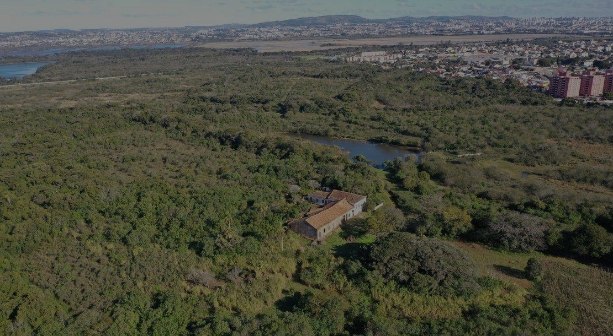
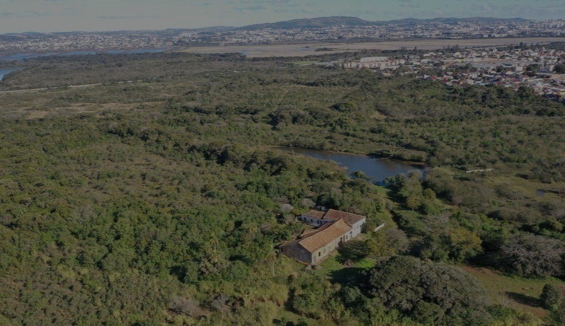
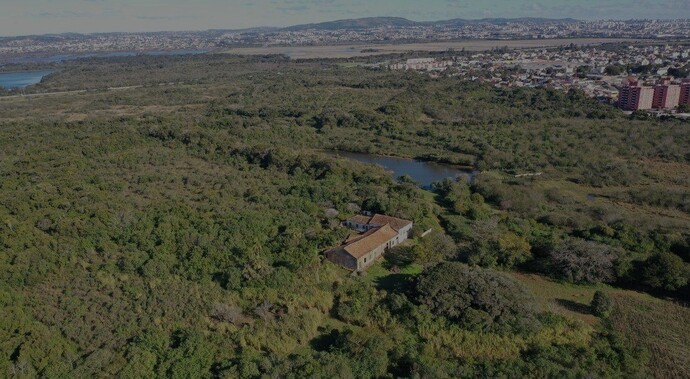
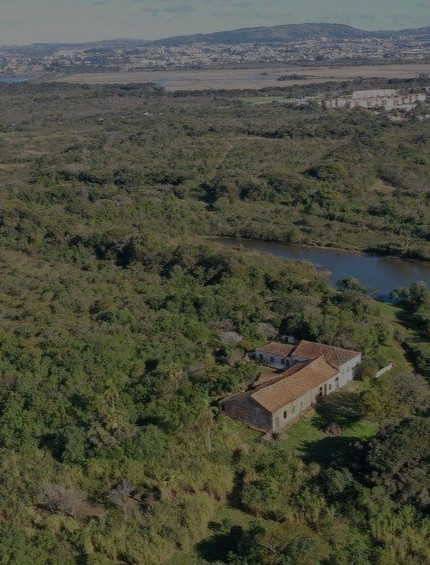
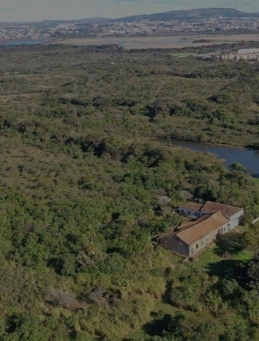
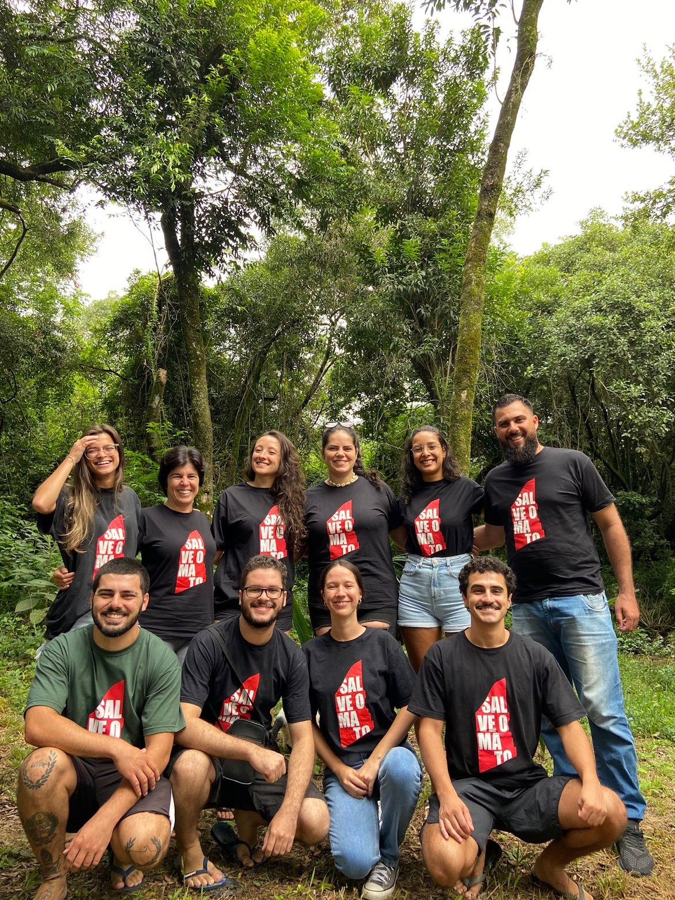
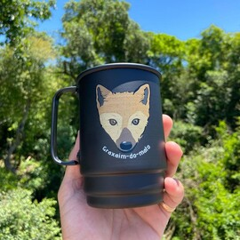
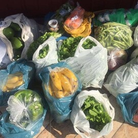

Mato
do Júlio
Mato do Júlio
Coletivo Mato do Júlio:
Coletivo
Mato do Júlio:
Protegemos a maior floresta de Cachoeirinha.
O Mato do Júlio é uma floresta com mais de 200 hectares que é composta pelo bioma mata atlântica e pampa, com abundância em fauna e flora. A floresta possui alto valor histórico, biológico e geográfico, por isso deve ser preservada.
O Mato do Júlio é uma floresta com mais de 200 hectares que é composta pelo bioma mata atlântica e pampa, com abundância em fauna e flora.






Quem somos?

Quem somos?
Somos um coletivo de pessoas que luta pela preservação da fauna e flora do Mato do Júlio, em Cachoeirinha, Rio Grande do Sul. Nosso objetivo é transformar a floresta Mato do Júlio em Parque Histórico-Florestal, onde a comunidade tenha acesso ao patrimônio socioambiental da área, com a floresta, Casa dos Baptistas e sítio arqueológico!
Além de preservar a biodiversidade da área e o Gato-do-mato-pequeno, vulnerável a extinção.
Ajude o Mato
Ajude nossa causa comprando nossos produtos ou doando!
Camisetas "Salve o Mato"
A partir de R$60,00 reais.
Disponível em diversas cores.

A partir de R$25,00 reais.
Canecas Mato do Júlio
A partir de R$25,00 reais.
Disponível em dois modelos.

Independente do valor.
Ajude com uma doação
Independente do valor.
Faça parte desse movimento!
Nossas ações
Presença na mídia
Nosso coletivo tem conquistado crescente reconhecimento na mídia social e nas notícias jornalísticas, consolidando-se como uma referência importante no campo da educação ambiental e cuidados com o meio ambiente. Através das redes sociais, compartilhamos informações relevantes e denúncias sobre temas ambientais que afetam a cidade, como a importância da reciclagem, conservação de áreas naturais e o impacto das ações humanas no ecossistema local.
Nosso coletivo tem conquistado crescente reconhecimento na mídia social e nas notícias jornalísticas. Através das redes sociais, compartilhamos informações relevantes e denúncias sobre temas ambientais que afetam a cidade, como a importância da reciclagem, conservação de áreas naturais e o impacto das ações humanas no ecossistema.
Catalogação da fauna e flora
A catalogação foi uma tarefa de extrema importância para o entendimento e preservação do ecossistema. O processo envolve a identificação, classificação e registro das espécies de animais e plantas presentes nessa área, proporcionando um conhecimento detalhado da biodiversidade local. Através da catalogação, foi possível identificar as espécies exclusivas da região, bem como as espécies ameaçadas de extinção que necessitam de medidas de proteção específicas.
A catalogação foi de extrema importância para o entendimento do ecossistema. O processo envolve a identificação, classificação e registro das espécies presentes nessa área, proporcionando um conhecimento detalhado do local. Através da catalogação, foi possível identificar as espécies ameaçadas de extinção que necessitam de medidas de proteção.

Cuidados com o Mato
Com uma postura ativa e engajada, o grupo busca promover a conscientização e estimular práticas sustentáveis. Entre as principais ações feitas temos a realização de mutirões de limpeza, para remover resíduos e lixo, ações de plantio de árvores e recuperação de áreas degradadas e também promovemos a conscientização e educação ambiental, por meio de palestras educativas em escolas e espaços públicos, despertando o interesse e a participação da comunidade.
O grupo busca promover a conscientização e estimular práticas sustentáveis. Entre as principais ações feitas temos a realização de mutirões de limpeza, para remover resíduos e lixo, ações de plantio de árvores e recuperação de áreas degradadas e também promovemos a conscientização e educação ambiental, despertando o interesse e a participação da comunidade.
Somos um coletivo de pessoas que luta pela preservação da fauna e flora da floresta Mato do Júlio, em Cachoeirinha, Rio Grande do Sul.